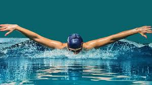

Un sitio dedicado al deporte de la natación, creado por @ajlkn / HTML5 UP
La natación es un deporte integral que fortalece el cuerpo y la mente. Mejora la resistencia cardiovascular, tonifica los músculos y promueve la flexibilidad sin impacto en las articulaciones. Practicar natación regularmente reduce el estrés, mejora la capacidad pulmonar y favorece un estilo de vida saludable. Además, es ideal para todas las edades, desde niños hasta adultos mayores, y se adapta a diferentes niveles de habilidad, desde principiantes hasta competidores de élite.
Los estilos principales de la natación competitiva incluyen crol, espalda, braza y mariposa, cada uno con técnicas únicas que desafían diferentes grupos musculares.
Cada estilo requiere entrenamiento específico y una técnica depurada para maximizar el rendimiento y minimizar el esfuerzo en el agua.
La natación competitiva tiene raíces en el siglo XIX y es uno de los deportes más destacados en los Juegos Olímpicos. Desde entonces, ha evolucionado con avances en técnicas, entrenamiento y tecnología.
La natación es un pilar de los Juegos Olímpicos modernos, con eventos que incluyen distancias desde 50 m hasta 1500 m, así como relevos y pruebas combinadas. Nadadores legendarios como Michael Phelps han elevado el deporte a nuevas alturas.
Organizados por la FINA (ahora World Aquatics), los campeonatos mundiales reúnen a los mejores nadadores del mundo en eventos que incluyen natación en piscina, aguas abiertas y natación sincronizada.
El entrenamiento en natación combina ejercicios en el agua y en tierra firme, enfocándose en fuerza, resistencia y técnica. Los nadadores trabajan en mejorar su hidrodinámica y eficiencia en cada brazada.
La natación no solo es un deporte, sino un estilo de vida que promueve la salud, la disciplina y la pasión por el agua. ¡Empieza hoy y descubre sus beneficios!
¿Interesado en la natación? Envíanos un mensaje para obtener más información sobre clases, competencias o consejos para mejorar tu técnica.